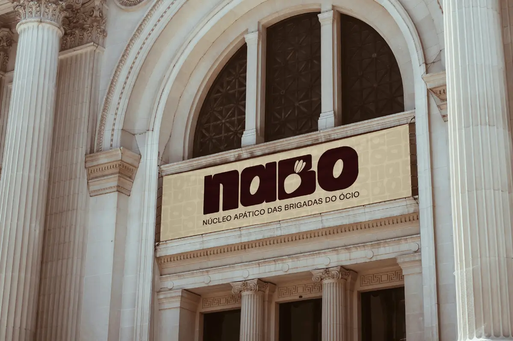
NABO
Fui convidado a redesenhar a identidade gráfica da NABO, uma editora-arte que encara o livro como objeto, brinca com o absurdo, valoriza a fotografia e a palavra com o mesmo peso, e prefere a liberdade criativa ao rigor institucional. É um lugar onde as ideias aparecem quando querem, crescem quando precisam e ganham forma quando faz sentido.
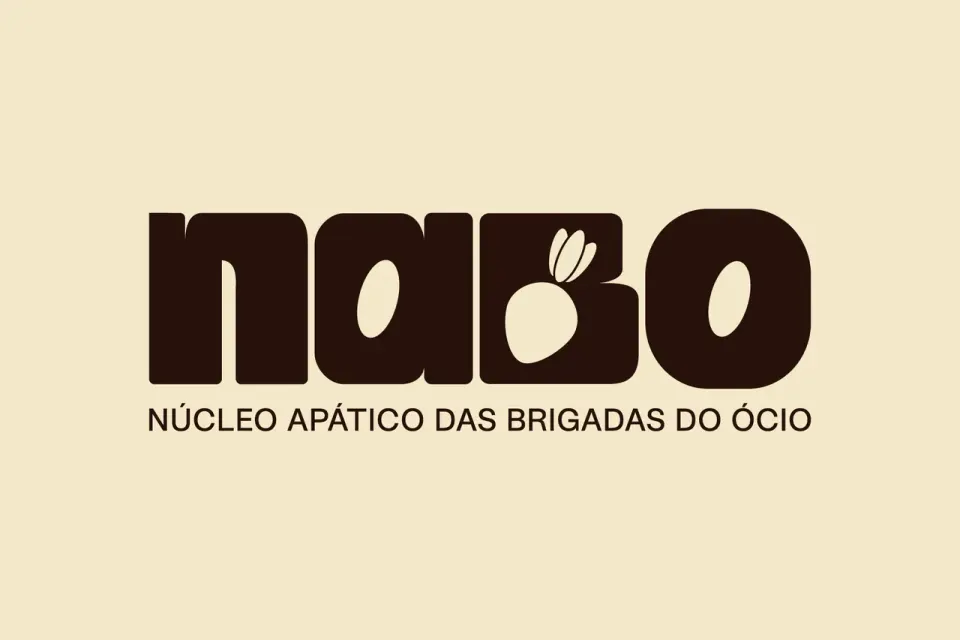
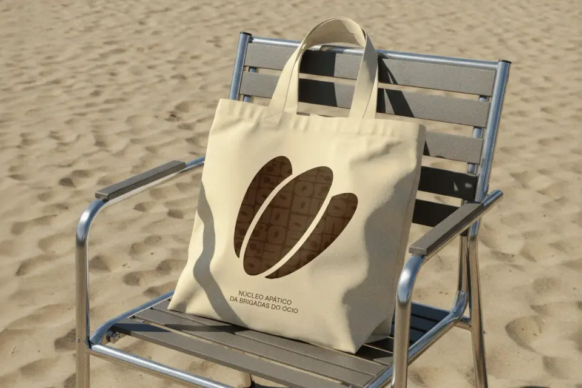
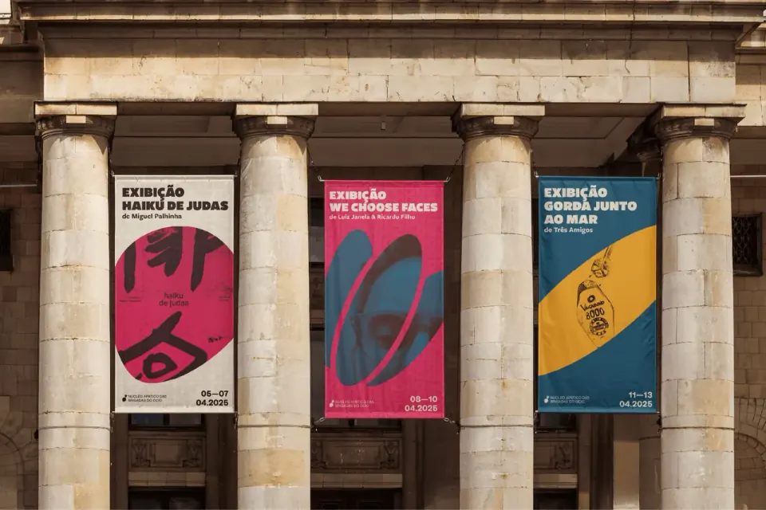
Sobre o projeto
A proposta teve como objetivo reposicionar a marca através de um sistema visual contemporâneo, capaz de equilibrar o caráter crítico e experimental das suas publicações com uma comunicação acessível e informal. O desenvolvimento incluiu a criação de um novo logótipo, manual de normas gráficas e uma estratégia de comunicação aplicada a meios impressos e digitais.
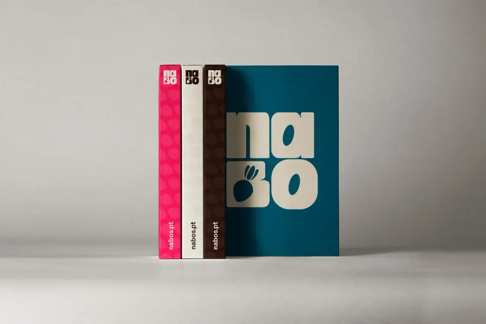
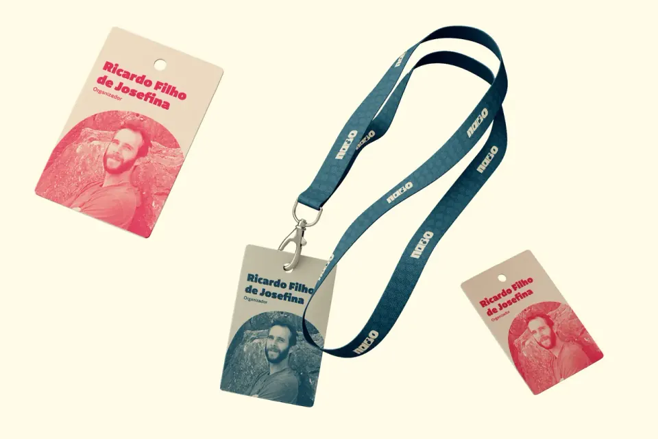
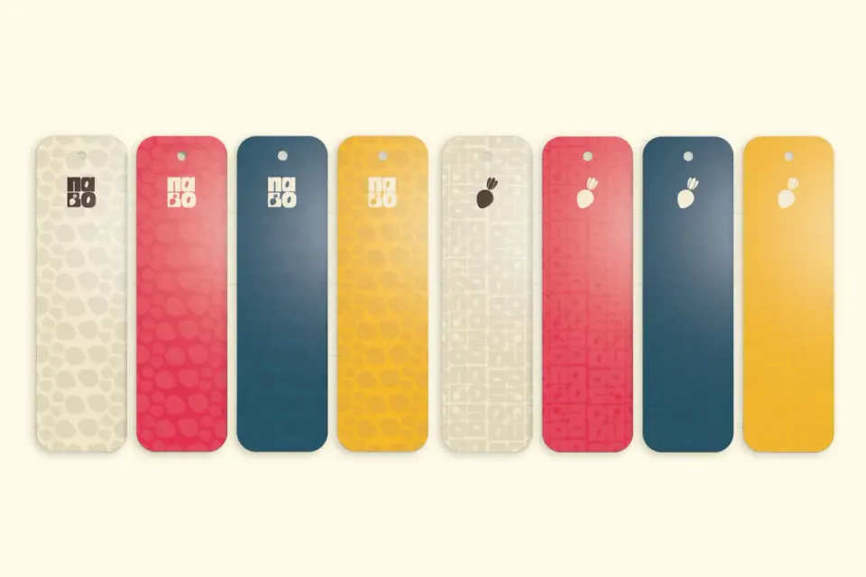
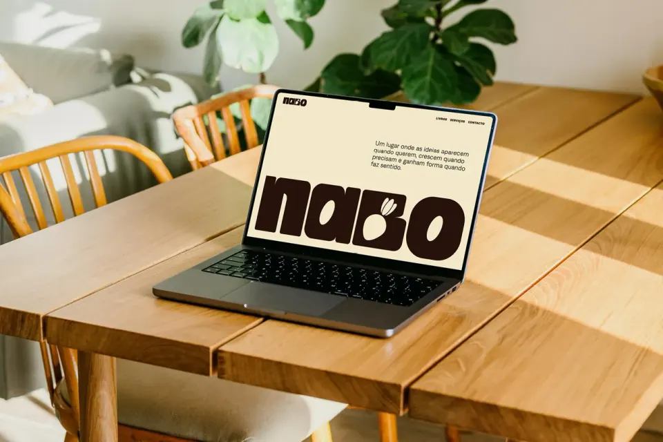
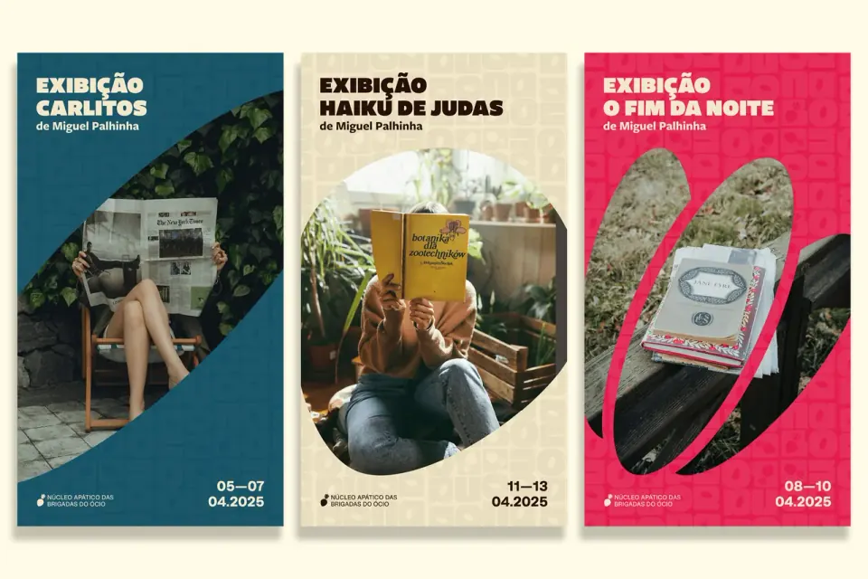
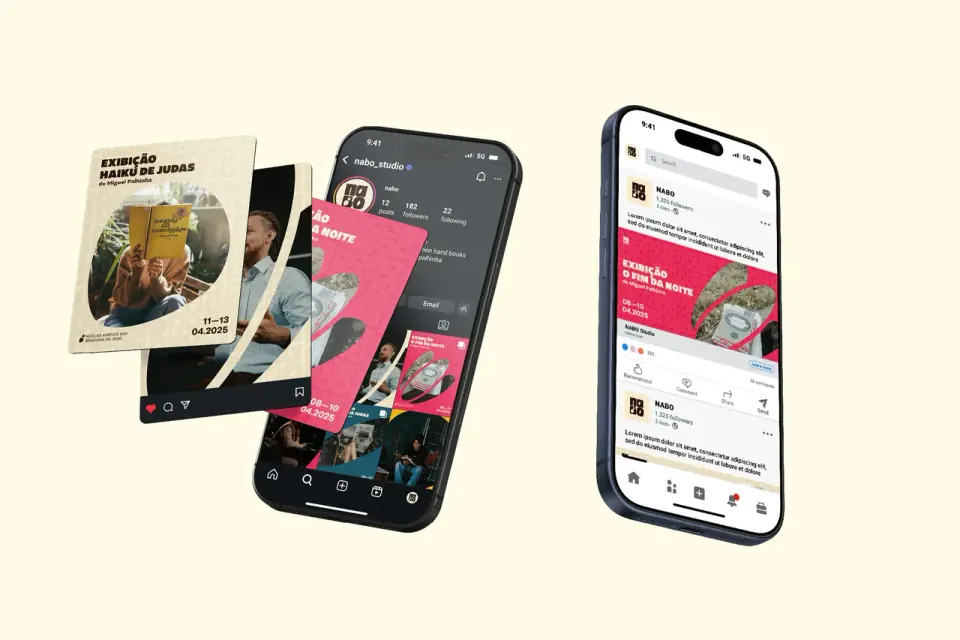
Projetos
01 / 06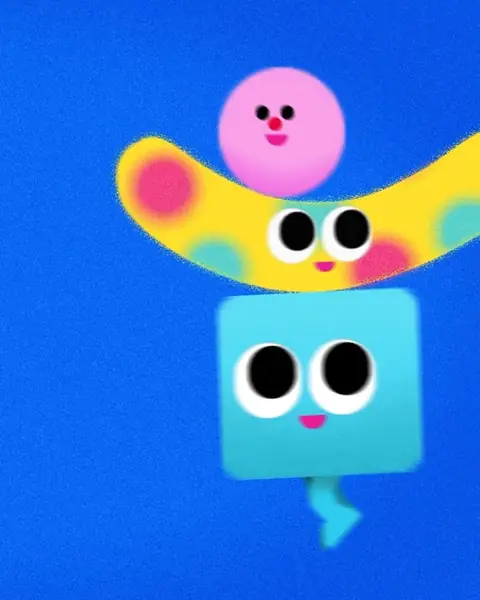
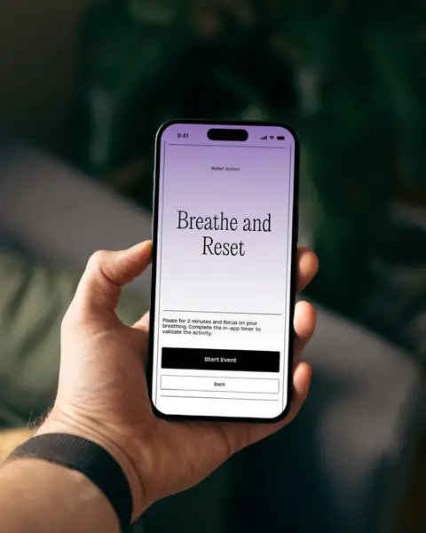
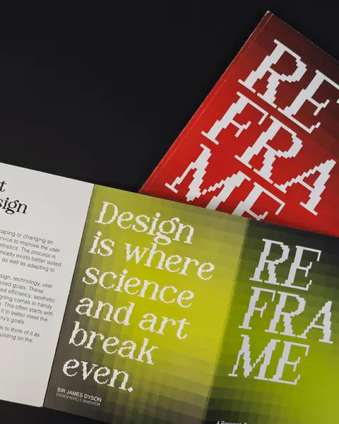
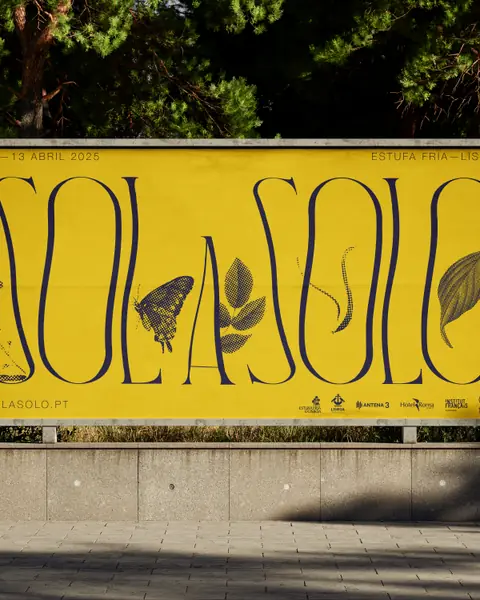
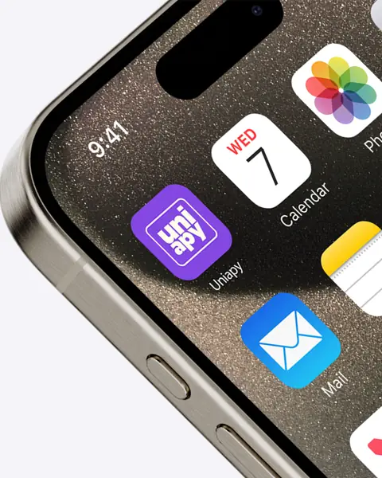
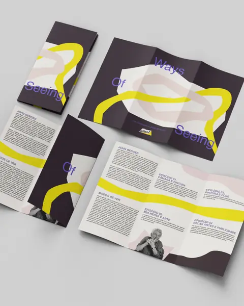